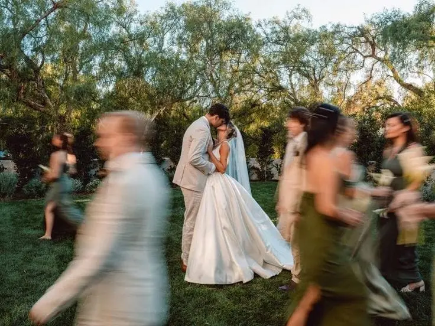
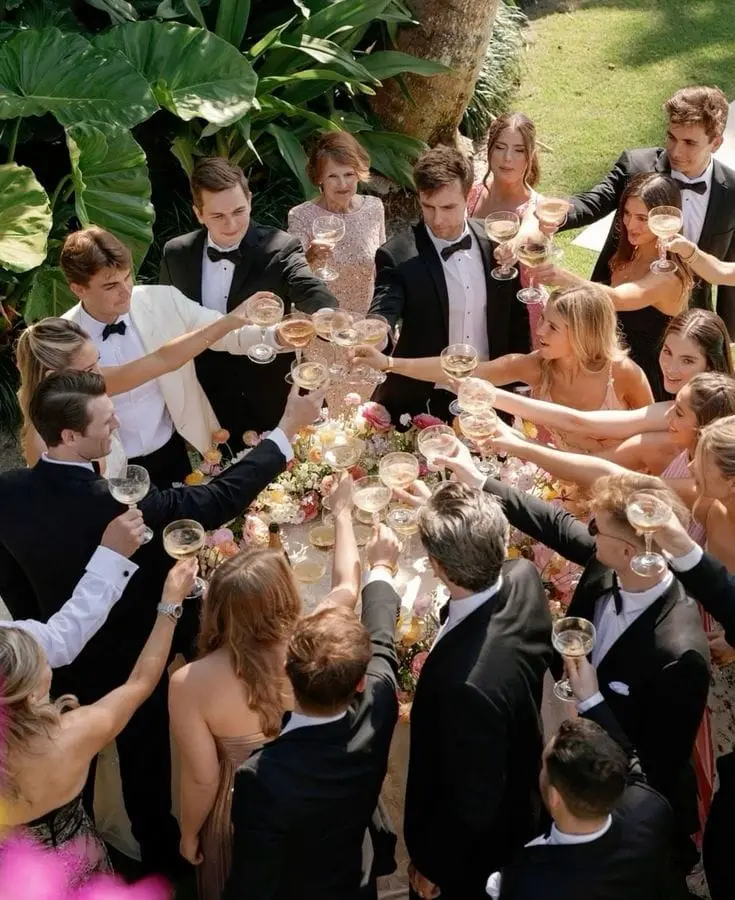

Gérer les personnalités familiales pendant les préparatifs de mariage peut rapidement devenir un véritable défi. Organiser un mariage est une aventure merveilleuse, mais elle est également émotionnellement intense. Entre les traditions familiales, les attentes parfois divergentes des parents et les sensibilités de chacun, il est fréquent que des tensions apparaissent au moment de prendre des décisions importantes.
En tant que wedding planner en Nouvelle-Aquitaine, j’accompagne de nombreux couples à Bordeaux et dans toute la région bordelaise pour naviguer avec diplomatie au cœur de ces situations délicates. L’objectif est clair : que l’organisation du mariage reste un moment de plaisir et de partage, et non une source de stress ou de conflits familiaux.
Les désaccords peuvent concerner le choix du lieu, la liste des invités, le budget, les traditions religieuses ou culturelles, voire des détails en apparence anodins comme la décoration ou le plan de table. Derrière ces discussions se cachent souvent des enjeux affectifs profonds : volonté de transmission, besoin de reconnaissance ou désir de participer activement à un événement unique. Comprendre ces dimensions permet d’adopter une approche plus apaisée et constructive.
Grâce à des stratégies professionnelles et des outils pratiques, il est possible d’anticiper les conflits avant qu’ils ne s’installent. Mettre en place des règles claires dès le départ, définir un cadre budgétaire précis, organiser des points d’échange structurés et utiliser une communication bienveillante sont des leviers particulièrement efficaces.
Dans ce guide, vous trouverez des conseils concrets, des exemples de phrases types pour désamorcer les tensions, ainsi que des solutions éprouvées pour gérer les personnalités affirmées et préserver l’harmonie familiale. Car un mariage réussi ne repose pas seulement sur une organisation impeccable : il se construit aussi dans le respect, l’écoute et l’équilibre entre toutes les sensibilités.
Comprendre les dynamiques familiales
Comprendre les dynamiques familiales est une étape essentielle avant de prendre des décisions lors des préparatifs de mariage. Cette analyse en amont permet d’anticiper les sensibilités et d’éviter que certaines discussions ne se transforment en tensions.
Il est important de déterminer clairement qui finance quoi, d’identifier les traditions importantes pour chaque famille, de repérer les tensions préexistantes et de savoir qui a besoin de se sentir impliqué dans l’organisation. Clarifier ces éléments dès le départ offre un cadre rassurant et limite les malentendus liés aux attentes implicites.
À Bordeaux comme dans le reste de la Nouvelle-Aquitaine, les mariages rassemblent souvent plusieurs générations avec des visions différentes de l’événement. Certaines familles privilégient un mariage traditionnel, attaché aux codes classiques et aux rituels établis, tandis que d’autres optent pour une approche plus moderne, centrée sur la personnalisation et la créativité.
Des choix cruciaux comme une cérémonie religieuse ou laïque, une réception très formelle ou plus festive, un grand nombre d’invités ou un format intimiste, peuvent devenir des points de divergence. Derrière ces préférences se trouvent souvent des valeurs profondes : transmission culturelle, attachement symbolique ou désir de respecter l’histoire familiale.
Prendre le temps d’écouter chaque partie, sans pour autant renoncer aux envies des futurs mariés, est fondamental. L’objectif n’est pas de satisfaire tout le monde à tout prix, mais de trouver un équilibre respectueux. Bien comprendre ces dynamiques dès le départ permet de prévenir les conflits et de construire un mariage harmonieux, qui reflète avant tout l’identité du couple tout en tenant compte des sensibilités familiales.
Situation 1 : Les parents veulent décider à votre place
Une situation fréquente lors des préparatifs de mariage survient lorsque les parents souhaitent prendre certaines décisions à votre place. Le choix du lieu de réception, du nombre d’invités, du traiteur ou même du type de cérémonie peut rapidement devenir source de tensions si chacun exprime ses préférences de manière trop directive.
Derrière cette attitude se cache souvent une intention positive : envie d’aider, désir de transmettre des traditions ou sentiment de légitimité lorsqu’ils participent au financement. Toutefois, il est essentiel de rappeler que ce mariage reste le vôtre.
Une astuce diplomatique efficace consiste à donner un rôle précis à vos parents afin de canaliser leur implication tout en préservant votre autonomie décisionnelle. Plutôt que de refuser frontalement une proposition, il est préférable d’opter pour une communication valorisante et structurée.
Vous pouvez par exemple utiliser une phrase type comme :
« On adore votre idée, nous aimerions garder la décision finale, mais ce serait précieux que vous nous aidiez sur les vins, le brunch du lendemain ou les hébergements. »
En attribuant une mission concrète et définie, vous transformez une source potentielle de conflit en collaboration constructive. Vos proches se sentent valorisés et impliqués, tout en respectant votre cadre.
L’important est de poser des limites claires mais bienveillantes dès le départ. Plus le cadre est défini tôt (budget, liste d’invités, style souhaité), moins les interventions extérieures risquent de créer de frustrations. Avec une communication posée, de la reconnaissance et une répartition intelligente des responsabilités, il est tout à fait possible de préserver votre autonomie tout en maintenant une atmosphère sereine pendant les préparatifs.


Situation 2 : Désaccord sur la liste d’invités
Une autre situation fréquente lors des préparatifs de mariage concerne les désaccords sur la liste d’invités. Il arrive souvent que les parents souhaitent inviter des amis, des collègues ou des connaissances que vous ne connaissez pas ou peu. Sans cadre défini, ces demandes peuvent rapidement générer des tensions et un sentiment d’injustice.
La liste d’invités n’est pas qu’une question relationnelle : elle est directement liée au budget, à la capacité du lieu et à l’ambiance souhaitée (mariage intimiste ou grande réception). Chaque personne supplémentaire impacte le coût global et l’équilibre de l’événement.
Une astuce professionnelle consiste à fixer un cadre clair dès le départ pour gérer les attentes de chacun. Vous pouvez par exemple :
- Définir un nombre maximal d’invités en fonction du lieu et du budget.
- Répartir les invitations de manière équitable entre les familles.
- Préciser que toute personne ajoutée devra être compensée par un retrait ailleurs.
Une phrase type pourrait être :
« On comprend que ces personnes comptent pour vous. Notre capacité maximale est de 120 invités, donc si on ajoute quelqu’un, il faudra en retirer ailleurs. »
Cette approche factuelle permet de déplacer la discussion du terrain émotionnel vers un cadre objectif et logistique. Vous ne refusez pas la demande par principe ; vous expliquez simplement les contraintes concrètes.
Il peut également être utile de créer une liste principale et une liste complémentaire, activée uniquement en cas de désistement. Cette méthode rassure les familles tout en maintenant la maîtrise du nombre final d’invités.
La clé reste la cohérence et la fermeté bienveillante. Plus les règles sont posées tôt et appliquées de manière équitable, moins elles seront contestées. En instaurant des limites claires et partagées, vous préservez l’harmonie familiale et rendez l’organisation du mariage plus sereine et agréable pour tous.


Situation 3 : Traditions imposées vs mariage moderne
Dans certains mariages en Nouvelle-Aquitaine, des tensions peuvent apparaître entre les traditions familiales et le souhait des mariés d’organiser une cérémonie moderne ou laïque. Ces divergences ne traduisent pas un manque de respect, mais plutôt une différence de vision : d’un côté, l’attachement aux rituels transmis ; de l’autre, l’envie de personnalisation et de liberté.
Certaines familles peuvent souhaiter une cérémonie religieuse, des codes bien établis ou des moments protocolaires précis, tandis que les futurs mariés imaginent une célébration plus contemporaine, intimiste ou symbolique. Sans dialogue, ce contraste peut rapidement devenir source d’incompréhension.
L’astuce diplomatique consiste à intégrer symboliquement les traditions, sans pour autant transformer l’ensemble de l’événement. Il ne s’agit pas de renoncer à votre vision, mais d’ouvrir un espace d’équilibre. Par exemple :
Inclure un rituel traditionnel dans une cérémonie personnalisée.
Programmer une musique familiale à un moment clé (entrée, signature, ouverture de bal).
Réserver un discours à un parent pour honorer la transmission et l’histoire familiale.
Mettre en valeur un symbole culturel discret dans la décoration ou le déroulé.
Une phrase type pour gérer cette situation pourrait être :
« On aimerait garder notre vision, mais intégrer ce symbole à un moment clé pour vous faire plaisir. »
Cette formulation montre que vous restez à l’écoute tout en affirmant votre cap. Elle valorise l’importance de la famille sans céder sur l’essentiel : votre projet commun.
L’objectif est de créer un équilibre respectueux entre héritage et modernité. En adoptant une posture d’ouverture, en expliquant vos choix avec calme et en proposant des compromis ciblés, vous préservez l’harmonie familiale tout en construisant un mariage qui vous ressemble pleinement.
Situation 4 : Tensions entre membres de la famille
Une autre situation délicate lors des préparatifs de mariage concerne les tensions entre membres de la famille, souvent liées à des divorces, des conflits anciens ou des rivalités persistantes. Ces tensions, si elles ne sont pas anticipées, peuvent rapidement affecter l’ambiance et générer du stress inutile pour les mariés.
Pour préserver une atmosphère sereine, il existe des solutions concrètes et efficaces :
- Plan de table stratégique : placer les invités de manière à éviter les confrontations directes. Séparer les personnes susceptibles de se heurter permet de limiter les frictions et d’assurer un déroulement fluide des repas et animations.
- Espaces différenciés : lors du cocktail ou de la soirée, aménager plusieurs zones conviviales où chacun peut se sentir à l’aise et profiter de la fête sans proximité forcée avec des membres en tension.
- Interlocuteur référent : désigner un témoin, un proche de confiance ou votre wedding planner pour gérer les demandes, questions ou éventuels incidents. Cette personne devient le point de contact central, permettant aux mariés de rester concentrés sur leur journée.
- Communication neutre et factuelle : répondre aux demandes et questions de manière objective, sans prendre parti, permet de prévenir les malentendus et d’éviter d’aggraver les conflits existants.
L’objectif n’est pas de résoudre les conflits familiaux, mais de s’assurer qu’ils n’impactent pas votre journée et que le mariage reste un moment de joie partagée pour tous. Avec une organisation réfléchie, une attention portée à la disposition des invités et une communication maîtrisée, même les tensions les plus anciennes peuvent être neutralisées, garantissant une ambiance harmonieuse et sereine du début à la fin.
Méthode professionnelle pour éviter les conflits
Pour éviter les conflits lors des préparatifs de mariage, il est essentiel d’adopter une méthode professionnelle et structurée. Cette approche permet de transformer un processus potentiellement stressant en une expérience organisée, harmonieuse et agréable pour tous.
La première étape consiste à poser un cadre clair dès le départ : définir votre vision du mariage, votre budget et le nombre d’invités. Plus ces éléments sont précis et partagés tôt, moins il y a de place pour les malentendus ou les demandes contradictoires.
Ensuite, il est important de communiquer à deux, en parlant toujours d’une seule voix auprès de la famille et des proches. Cette unité renforce votre position et évite que des messages divergents ne génèrent des tensions ou des incompréhensions.
Vous pouvez également impliquer vos proches sans céder : confier des responsabilités précises valorise leur participation tout en préservant vos choix principaux. Par exemple, un parent peut s’occuper de la sélection des vins, de la décoration florale ou de la coordination des animations pour le brunch du lendemain. Cela permet de canaliser leur implication de manière constructive.
Dans certaines situations, externaliser certaines tâches peut s’avérer très utile. Un wedding planner joue un rôle de tampon diplomatique, capable de reformuler les demandes, de temporiser les tensions et de proposer des compromis élégants. Cette expertise permet de protéger les mariés du stress et d’assurer une communication fluide et respectueuse avec toutes les parties prenantes.
À Bordeaux et dans toute la région bordelaise, j’accompagne de nombreux couples pour que l’organisation de leur mariage reste un moment de joie et de sérénité, tout en respectant les attentes familiales et en maintenant une atmosphère harmonieuse du début à la fin.
Cette méthode professionnelle repose sur anticipation, communication et structuration : trois piliers essentiels pour que les préparatifs soient aussi agréables que la célébration elle-même.
Mini guide imprimable – Gestion des personnalités
Pour aider les futurs mariés à gérer les personnalités familiales et à éviter les tensions, voici un mini-guide pratique et imprimable à garder à portée de main. Commencez par définir vos priorités à deux, afin de savoir ce qui est réellement important pour votre journée et rester alignés face aux attentes des proches. Ensuite, listez vos points non négociables, ceux qui doivent rester entre vous, comme le choix du lieu, des prestataires ou le style de la réception, afin de poser des limites claires et d’éviter les interventions intempestives.
Identifiez également les sujets sensibles, ceux qui pourraient générer des conflits, comme la liste d’invités, les traditions familiales, les discours ou le plan de table, et préparez des phrases diplomatiques pour communiquer vos choix avec tact. Par exemple, vous pouvez dire : « On adore votre idée, mais nous aimerions garder la décision finale et vous impliquer sur [un point précis] » ou « On comprend que cela compte pour vous, notre capacité maximale est limitée, donc il faudra équilibrer avec d’autres choix ».
Enfin, il peut être utile de nommer un médiateur pour le jour J, qu’il s’agisse d’un témoin, d’un wedding planner ou d’un proche de confiance, afin de gérer les situations délicates et de garantir une journée harmonieuse et sereine pour tous. En suivant ces étapes, vous disposez d’un outil concret pour anticiper les tensions, préserver l’équilibre familial et faire en sorte que l’organisation du mariage reste un moment de plaisir et de partage.


Pourquoi l’accompagnement change tout
Pourquoi l’accompagnement fait-il vraiment la différence ? Un mariage réussi ne repose pas uniquement sur la décoration, le choix du lieu ou le traiteur, mais sur l’équilibre émotionnel de tous les acteurs de la journée. Chaque décision, chaque rencontre et chaque détail peut générer du stress si elle n’est pas guidée avec clarté et bienveillance.
En tant que wedding planner en Nouvelle-Aquitaine, mon rôle dépasse l’organisation logistique : il s’agit également de désamorcer les tensions, de structurer les décisions de manière sereine, de préserver votre couple face aux pressions familiales et de garantir une atmosphère apaisée tout au long des préparatifs et le jour J.
Grâce à un accompagnement professionnel, chaque moment devient plus harmonieux. Les mariés peuvent se concentrer sur l’essentiel, partager des instants uniques avec leurs proches et profiter pleinement de leur journée, tout en minimisant le stress et les imprévus. L’accompagnement transforme ainsi l’organisation d’un mariage en une expérience fluide, sereine et mémorable.
En Bref...
Gérer les personnalités familiales et les tensions lors des préparatifs de mariage est un enjeu tout aussi important que le choix du lieu ou de la décoration. Avec une communication claire, des règles établies dès le départ et des stratégies diplomatiques adaptées à chaque situation, il est possible de transformer ces défis en moments de joie et de partage. L’accompagnement d’un wedding planner permet non seulement de structurer l’organisation, mais aussi de désamorcer les conflits, de préserver l’harmonie familiale et de garantir que les mariés restent au centre de leurs choix. En anticipant les tensions et en adoptant une approche professionnelle, votre mariage à Bordeaux ou dans la région bordelaise devient un événement serein, mémorable et pleinement à votre image.
Lovely Day Event c'est plusieurs types de prestations
L'organisation de mariage
Je vais intervenir sur toutes les étapes de vos préparatifs et vous guider dans vos choix. Je suis force de proposition pour que votre mariage ne ressemble qu’à vous.
Décoration de mariage
Créative et passionnée, je suis certifiée Wedding Designer et je conçois une ambiance scénographique qui correspond au thème de votre mariage.
Coordination le jour J
Je serai le chef d'orchestre pour gérer les différents prestataires, la mise en place de votre décoration et le déroulement de cette belle journée.